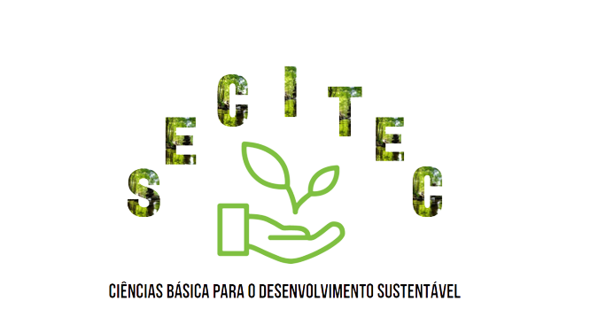

17 a 19 de Outubro de 2023 | IFBA - Brumado
Este evento tem como foco discutir a importância das ciências básicas para o desenvolvimento sustentável.
MATUTINO
VESPERTINO
Link para fazer as submissões de trabalhos: https://www.even3.com.br/cienciasbasicasparaodesenvolvimentosustentavel/
Inscrições prorrogadas até 01/10/2023